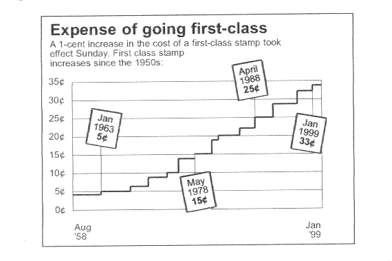

|
From:
North of Jewfish Creek
Dear Friend &
Subscriber,
I don't know when you will be reading this
but, I am starting to write it on November 8, 2000.
This morning's Miami
Herald headline says, "BUSH
WINS IT!" The TV however, says we don't know who has
won it. Personally, I don't much care. It's just mildly
interesting as far as I'm concerned. Florida, of course, is
the "linchpin" state which means whomever down here
has the best thieves will probably manage to win (steal) the
presidential election.
Whatever.
Did you know the "Jerry Seinfeld
Show" almost didn't get on the air when Seinfeld told the
TV execs he wanted to do "a show about nothing." Why
do I tell you that? Because, this is the first period of time
in maybe 15 years where I didn't have something I was feeling pressured
to write. That's a real luxury for me and I intend to take
advantage of it. Some of you will say "Eureka!"
as you read this newsletter and your creative juices start
flowing. On the other hand, I'm sure some of you will find
this "a newsletter about nothing."
It's not going to be of earth-shaking
importance either way.
Listen: I have a tall wooden box I keep in the
main salon of my boat. It is painted a bright red. I call it
my "fodder box." I put newspaper and magazine ads
and articles in there of printed material that, for some
reason, I find interesting. There might be a rhyme or reason
to my collection but, I dare say, you will have a real
challenge on your hands if you determine to try to find it.
Anyway, here's some of the material from my
fodder box:
| A. |
Here's a gadget about 3" wide and little more than
4" long. It has 33 buttons on it and a screen that
measure 2-1/2" x 2". On the screen are bunches of
little pictures. To me, these little pictures look like a
closed envelope; another one looks like an open envelope; yet
another is a magnifying glass; a rolodex; but here's two
pictures of things I can't make out or understand; then
there's a calendar showing one day of the month; an alarm
clock with two bells; a calculator; this one looks like
something thumbtacked to the screen as though it were
thumbtacked to a bulletin board; here's two checkmarks; a
Swiss army knife; an airplane; and finally, something else
that confuses me. This gadget is called a
"Blackberry" and you can get it from Amazon.com.
The
ad says for $499 plus $39.95 a month, you will always be
"connected" and you can send and receive e-mail to
your heart's content. Plus, you get pager and calendar
features, with the day, date and time. And to think, after a
mere 7-1/2 years of intense study... you will be able to make
use of the alarm clock, Swiss army knife and all the other
indispensable doodads which are represented on the tiny screen
by all these tiny icons. After studying this ad carefully, I
have deduced, it is time to crumple up this piece of paper and
throw it away! |
| B.
|
Here's a pair of gasoline-powered boots which has been
designed by a Russian professor. Each of these
"Fly-Me-To-The-Moon-Boots" has its own 12"
piston that fires every time the wearer steps down on one of
them, giving him a 13 foot
stride and speed greater than Michael Jordan. |
| C. |
Here's a headline I like. It says, "37
Things A Writer Can Do To Avoid Writing."
According to the ad under this headline, there are
approximately 500,000 books written every year in the United
States... yet... 90% of these same books are never published.
Thanks to the wonders of technology, it is now possible to
publish your book on the Internet (where absolutely nobody
will ever read it) for only a few thousand dollars. |
| D. |
According to Reuter's, the number of millionaires in
the world increased by 18% last year. There are now 7 million
of them, with a total net worth in excess of 25.5 trillion.
(And what's holding you back?) |
| E. |
Ted
Koppel checks his e-mail only once a month. He is not happy
about the enhanced speed of communications. He says it
detracts from reflection and carefully-considered answers and
solutions. |
| F. |
A
man in Wausau in Wisconsin who is a former computer analyst
has won $143,000 in damages from the company which used to
employ him because... his boss spanked him. According to the
article, his boss spanked him as other co-workers watched and
when his boss was finished, he put his arm around this man and
said, "Now you're one of us." |
| G. |
When
it comes to charity, people in Mississippi (the poorest state
per capita in the Union) donate more money to charity than any
other state. Massachusetts has once again finished dead last
for the fourth time in six years. All of this vital
information came to us in what's called "The Generosity
Index." |
| H. |
Here's a little self-explanatory graph which I am going
to ask Theresa to reproduce in this newsletter about the cost
of postage. (Now that does have something to do with
direct mail, wouldn't you agree?) |

| I. |
MIT
(Massachusetts Institute of Technology) is now developing
computer systems which use biorythmetic sensors attached to
the user's body and tiny cameras that record facial gestures
to develop individual emotional profiles. When a user becomes
uninterested, frustrated or bored, the software automatically
adjusts to something else. |
| J. |
Americans lose their virginity at the youngest average
age in the world, that being 16.4. We have sex more often than
people in other countries... 132 times a year on average. The
Russians come in second with 122 times a year on average and,
the French follow in third place with 121 times and, the Greek
are next with 115. The Japanese are at the bottom of the list,
making love only 37 times a year.
The article continues saying the average number
of partners in a lifetime is 8.2. However, the United States
is listed as being the most promiscuous with 16.7 partners.
This study also says Brazilians are only third when it comes
to how many sex partners they have.
This survey was conducted by the condom maker,
Durex, and, in my opinion... it is total B.S. |
| K. |
What
should be our priority? To help us decide, here are the
approximate number of deaths per year from the following
causes:
|
| Smoking: |
434,000 |
| Alcohol: |
105,000 |
| Secondary Smoke |
53,000 |
| Auto Accidents: |
49,000 |
| Suicide: |
31,000 |
| AIDS: |
31,000 |
| Homicide: |
22,000 |
| Cocaine & Crack: |
3,300
|
| L. |
The
Post Office in Florida encouraged people in 1925 to send live
baby alligators back home to their relatives. The cost of
sending a baby alligator to someone in your family was 25¢
according to the July 29, 1925 edition of The Miami Daily News. The size of the alligator could not be longer
than 12" and as many as 10,000 baby gators were shipped
during the course of a normal winter season. |
| M. |
I'm
looking at a picture of a guy reading the Miami
Herald. The story beneath the picture says, "Many
years ago, my husband, John D. Locke, was a prominent
advertising manager. We lived a very interesting life and
retired in Pompano Beach. One of his highlights and every day
pleasures is reading the 'Herald.' He is now 80 years
old." (Now, isn't that special?) |
| N. |
"Slaughterhouse Worker Uses Simple Strategies To
Become A Millionaire" - that's the headline of an ad
written by Russ Whitney. |
| O. |
There is now a proposed regulation to set a 10' height
limit here in Florida that regulates "donkey
diving." (I kid you not.) The sponsor, Representative
Suzanne Jacobs, Democrat, Delray Beach, said the legislation
is needed because exhibitions featuring horses and mules
jumping into a pool of water is not yet covered by existing
state laws on cruelty to animals.
"The most memorable aspect of them [donkey diving] is the fear and
disorientation you notice on the animals' faces after they hit
the water," says Joe Taksel. He continues, "This
is a belly flop times ten."
One
of our legislators is pushing to get the donkey diving height
limit raised to 15 feet. However, the Bill originally drafted,
lowered the limit to only 5 feet. Personally, I think we need
to put a lot of thought into this piece of legislation. |
| P. |
A
new tribe of people has been discovered in the Amazon Jungle
in Brazil near the border of Peru. There are only about 200
members of this tribe and they live not on the ground but,
just beneath the forest canopy. This is great breaking
news... because... it is an untapped market. It is a pocket of
people that, in my opinion, are in desperate need of a
McDonald's and a place to buy "Twisters" at KFC. |
| Q. |
In
Japan, there is a company called Medic which markets small
range jammers which will stop cell phones from working in
movies and other public places. (And all along, I thought
there were "Cell Phone Gods.") |
| R. |
How
many times do you think people in America go to www.nist.gov
to find out exactly what time it is? The answer is
6-1/2 million times per day. |
| S. |
The
Welcome Wagon isn't around any more. It's said
1-1/2 million people per year used to receive a
visit from the Welcome Wagon whenever they moved to a new
home. Now, new arrivals in many cities just get a directory of
coupons mailed to them. How insensitive. |
| T. |
"A Good Scare Is Worth More Than Good
Advice," says Sam Ewing. |
| U. |
Here's a list of the bills in circulation in the United
States by denomination: |
| $1 bills: |
$6,370,871,342 |
| $2 bills: |
$1,116,303,324 |
| $5 bills: |
$7,387,791,395 |
| $10 bills: |
$13,304,416,330 |
| $20 bills: |
$82,267,022,800 |
| $50 bills: |
$46,062,973,950 |
| $100 bills: |
$280,465,289,400 |
| $500 bills: |
$144,314,000 |
| $1,000 bills: |
$167,519,000 |
| $5,000 bills: |
$1,755,000 |
| $10,000 bills: |
$3,450,000
|
| V. |
There's a guy named Walter Beerman who was born March
13, 1893. He began working in Nashville at his father's
drugstore when he was about nine years old. At 105, he worked
30-hours-a-week at his son's real estate business in Lakeland,
Florida. |
| W. |
If
you are curious, you can go to www.virtualmakeover.com
and order some ingenious software which will allow you to see
what you could look like with more than 150 kinds of
hairstyles, hats and eyewear. |
| X. |
"Warning: Do Not Read This Unless You Are Already
Rich!" That's a killer headline I wrote for a company
back in 1998. |
| Y. |
Los
Angeles, California is this country's #1 destination for
people who have decided to relocate. |
| Z. |
On
the following pages is a full-page ad (reproduced to fit into
my newsletter) which appeared in Investors
Business Daily featuring Martin Weiss, President of Weiss
Research, and self-proclaimed America's #1 financial watchdog.
His long copy, full-page ad tells you how you can, if you act
quickly, avoid being devastated by the coming Y2K crisis. |
"All
hell broke loose when we sent our Y2K surveys to
11,000 banks and S&Ls!
|
| "Bankers
threatened me with lawsuits. Regulators hit the
ceiling. Why? Because over 1,305 financial
institutions are behind schedule in fixing their
computers for the Year 2000, and they don't want
you to know who they are. But I will tell you.
I'll give you the names of the most and least
vulnerable. I'll tell you where your
institution stands. Plus, I'll show you how to make
windfall profits from the coming Y2K Crash." |
|
Dear Friend,
I recently sent surveys
to 11,000 banks and S&Ls, asking them about their
progress in fixing their computers for the Year 2000.
All hell broke loose.
Bankers sent me threatening letters. S&L managers
went ballistic. Federal regulators hit the ceiling.
One banker wrote me that
"any survey results compiled by your company...
will result in dire consequences." Another
warned: "If you release any derogatory
information regarding our... Y2K efforts, we will
immediately begin a lawsuit against your firm and its
management."
But to ensure the safety
of your money, you MUST
have this information. So I'm publishing the results
of our survey - no matter what
they say!
"Many
[bank] computers
could malfunction or
even shut down."
Congressman James A.
Leach
Here's why: If your bank
isn't ready for the Year 2000, your checking and
savings accounts could be FROZEN. Worse, just the FEAR
of this event could cause a bank run any time BEFORE
the Year 2000!
According to our surveys,
there are now at least 1,300 banks and S&Ls behind
schedule in fixing their computers. And if you add
credit unions, the number of institutions behind
schedule swells to over 6,000!
That's why Senator
Patrick Moynihan (D-NY) recently declared: A study on
Y2K by the Congressional Research Service "substantiates
the worst fears of the doomsayers."
|
To help protect
you from the impending disaster...
I
want to send you
the actual results of
our Y2K surveys - FREE!
My name is Martin Weiss,
publisher of the Weiss Safety Ratings and the YEAR
2000 ALERT.
According to a study by
the US General Accounting Office (GAO), our safety
ratings are more accurate than those of Moody's and
Standard & Poor's.
Louis Rukeyser says ours
is a "tougher service." Fortune says Weiss
is "the most comprehensive source" of
information.
Now, we have just
introduced the WEISS Y2K RATINGS for thousands of
banks, S&Ls and insurers.
Without the Weiss Y2K
ratings, it will be virtually impossible for
you to safeguard your money from the Y2K Crisis. With
our ratings, safeguarding your money could be the
easiest - and the most important - precaution you can
take.
That's why I want to rush
you our exclusive, one-of-a-kind Y2K ratings of the
safest and most vulnerable banks and S&Ls in
America. Plus, I will also send you our list of the
safest and most vulnerable insurance companies.
And to make sure I get
this vital, money-saving information to you as soon as
possible - I'll even send it to you FREE.
It's all in a new special
free report that I have just published - Y2K-PROOF
YOUR MONEY, by our Y2K expert and financial analyst,
John Mauldin. In it, you'll discover...
|
*
The safest banks, S&Ls and insurance
companies in America - and those most likely to run
into serious trouble during the Y2K Crisis...
*
3 "Red Flags" that can instantly tell
you if your bank or insurer is likely to be ready or
not...
*
Why many credit unions are particularly
vulnerable to Y2K problems - and what you can do if
you have money in one...
*
Safer than a CD: No $100,000 limit on federal
guarantee. No early withdrawal penalties...
*
How to protect your variable or fixed
annuities, whole life policies and health coverage...
Y2K-PROOF YOUR MONEY
tells you what the regulators and unprepared financial
institutions don't want you to know - and what no
other publication can tell you.
If you have a checking or
savings account... a bank money market fund or
certificate of deposit... or an insurance policy,
Y2K-PROOF YOUR MONEY is absolutely MUST-READING for
you.
But we want to do even
more to help you weather the Y2K storm.
America's
largest and richest
companies will FAIL to fix a lot
of their critical software in time!
As many as 25 to 30
Fortune 500 companies could be wiped out; up to
180,000 small companies could cease to exist. When
computers foul up, everything stops. Assembly lines
freeze... checks can't be written... and invoices
can't be issued.
Unless the problem is
fixed - and fixed FAST - Y2K-related bankruptcies are
inevitable. |
|
The Dow could
easily fall 4,000 points before the dust settles. And
a lot of the bloodletting will take place well BEFORE
the Year 2000 deadline. That's why I also want to send
you, as a second FREE gift, a copy of Y2K-PROOF YOUR
INVESTMENTS: How To Make A Fortune In The Y2K Crash.
In it, you will discover...
*
The Y2K Losers: Companies that are most
likely to suffer from the Y2K Crisis. Get rid of them now
before the crowd, or your investments could be wiped
out.
*
The Y2K Winners: Companies that are most
likely to be ready for the Year 2000. When others have
sold these shares in a panic, you will be scooping
them up and making a fortune.
*
Mutual funds: Which ones to avoid, and
which ones will actually profit from the decline.
*
An amazing mutual fund that will
automatically surge 20% every time the stock
market falls 10%.
*
An investment that you can buy today, BEFORE
the Y2K stock market decline, which could be worth 10
or 20 times more AFTER the decline.
*
The Y2K Bounce: Just when people have
given up hope, things will be getting back to normal.
That's when you'll see one of the sharpest,
rip-roaring bouncebacks of all time - and will do some
serious bargain hunting. Institutions and
individual investors will be in a frenzy to own those
stocks. We'll own them first.
The Y2K Crisis will be
the mother of all money-making opportunities. And I
want you to be with us - on the winning side!
More
Important Than Money: How To Protect
Your Home And Family From A Y2K Disaster
Some well-intentioned,
but rather hysterical analysts say you should sell
everything, pull up stakes and move to the country.
Then they say you should spend a fortune on storage
food, electrical generators, and guns and ammo.
Frankly, I believe that kind of advice does more
harm |
than good.
What you need is
real-world help - advice you can actually use to
minimize the impact Y2K will have on you personally.
That's why I also want to
send you a FREE copy of Y2K-PROOF YOUR HOME AND
FAMILY: Your Personal Year 2000 Survival Manual.
This practical,
step-by-step guide is based on our own cautious and
balanced assessment of the impact Y2K is likely to
have on your city, your home and your family. You'll
discover...
*
What you should know about the potential for
food and water shortages - and what you really need in
order to ensure your family's needs are met.
*
How to best deal with a health crisis at home -
plus urgent advice for anyone on insulin or other
long-term prescription drug treatments.
*
Simple strategies for coping with electrical
failures and brownouts - and how even lengthy
disruptions can be remedied by the average homeowner.
All
3 Timely Y2K Survival
Guides Are Yours, FREE!
These three gifts are
carefully designed to help you take three giant steps
toward weathering - and actually profiting from - the
Y2K Crisis:
STEP #1:
Protect Your Money - Your FREE copy of Y2K-PROOF YOUR
MONEY reveals the banks, S&Ls and insurance
companies best-prepared to protect your money from a
Year 2000 disaster - plus the institutions that are
LEAST prepared...
STEP #2:
Protect Your Investments And Prepare To Profit - Your
FREE copy of Y2K-PROOF YOUR INVESTMENTS: How To Make A
Fortune In The Crash gives you simple yet powerful
strategies for both protecting your investments and
actually piling up more wealth even while millions of
others are losing theirs...
|
STEP #3:
Protect Your Home And Family - Your FREE copy of
Y2K-PROOF YOUR HOME AND FAMILY: Your Personal Year
2000 Survival Manual helps guarantee the safety and
comfort of your home and family.
For the next 60 days,
I've arranged for you to receive all three gifts free
with your risk-free subscription to YEAR 2000 ALERT,
edited by our Y2K expert, John Mauldin. This is our
monthly guide to surviving and growing wealthy before,
during and after the Y2K Crisis.
It's through the YEAR
2000 ALERT that we keep you up to date on all the
rapidly changing developments in banking and
investments.
Plus, this is where we
introduce you to those companies that are likely to
enjoy the most success before and during the Great Y2K
Bounce I told you about. Here are just two examples:
*
A leading health equipment company which is already
Y2K compliant today. It will dramatically increase
market share and even buy the competition for a
fraction of today's value.
*
A little known company that actually makes a
killing from buying bad dept, sometimes for pennies on
the dollar. The Y2K Crash will be a bonanza for this
company.
In each issue, you get
the very latest information from the most
knowledgeable, unbiased experts in government,
utilities, engineering and finance.
Most important, you'll
discover how to plan your finances in such a way that
you'll actually make money - a lot of money - during
the Y2K Crash.
The
Y2K Panic Is Not Waiting
Around For You Or Anyone
Else. It's Already Beginning
To Hit Markets Right Here
And Now.
In 1999, long before the
computers and banks and insurance companies crash, the
public could be panicking, rushing to withdraw their
funds.
To protect your
money and your investments - and to position |
|
yourself
for the profits of a lifetime - you have to ACT NOW.
The Y2K Crisis is already here. There is nothing you
can do to stop it.
Normally, a full year of
YEAR 2000 ALERT is a bargain at just $98 per year. But
if I hear from you within the next 30 days, it's yours
for just $49. That's just 13 cents a day.
Call us at 800-871-2374
and she'll arrange to have these free gifts sent to
you immediately. Plus, ask her to give you - right
over the phone - a Weiss Y2K Rating for YOUR bank,
S&L or insurance company.
Some institutions
responded to our survey with angry letters and
threats. But many also sent us the information we need
to assign a Y2K readiness rating. We can't guarantee
yours is among them. But if it's not, we'll give you
your overall safety rating for your institution, plus
the phone number of its Y2K Project Manager or
financial officer!
Don't wait. Get your
money to safety - and start making huge |
profits - before
the Y2K panic begins. Call NOW.
Sincerely,
Martin Weiss, Publisher
P.S. Sign up for
two years - 24 months - and I'll send you FOUR
additional bonus gifts to help you survive and thrive:
The Weiss Y2K Watchdog
Service closely monitors the Y2K status of up to
three banks, S&Ls and/or insurance companies for
you and alerts you by first-class mail if the rating
of any of them changes. (Normally, Weiss Ratings
charges $300 for two years of this service - but it's
yours, FREE with your two-year subscription to YEAR
2000 ALERT!)
Three Mutual Funds
That Will Soar Before And During The Y2K Crisis.
One fund will automatically rise 10% for every 10%
decline in the S&P! You get no margin calls. And
your investment never expires. The other is even more
aggressive - it will go up 20% for every 10% decline
in the S&P. The third makes money whether the
market goes up |
or down.
Get Out Now! 18
Popular Stocks That Will Be Hit Hardest By The Y2K
Crisis. The Y2K debacle will pound these 18
Goliaths with devastating sales declines. Their
earnings will be hammered 50%, 60%, even 100%. You'll
discover a great way to cash in on the calamity. Our
technique is simple, the risk is clearly limited; and
the profit potential is explosive!
Y2K And Your
Retirement. How to build a Y2K firewall around
your nest egg, and how to keep it growing no matter
what happens in the stock market.
P.P.S. Whether
you subscribe for one year or two, if you're not 100%
satisfied with any aspect of our information or
advice, just call or write our office within 60 days
and you'll receive a full refund, no questions asked.
And you may keep ALL the materials you've received
from us with my personal thanks for taking a look at
YEAR 2000 ALERT!
|
About the above ad, was the guy who wrote it a
flat-out con man... or... an idiot? I honestly don't think he
was either. I just think he is another piece of living
proof...
It's Now Virtually Impossible
For Any Of Us To Predict The Future
With Any Reliability Whatsoever
| |
Sincerely, |
| |
 |
| |
Gary C. Halbert |
| P.S. |
Thank
you for indulging me in the luxury of writing this
"newsletter about nothing." Next month, I
promise, I will write about something. |
| P.S.#2 |
By
the way, I'm just curious, did any of you find this
issue of my newsletter even a little bit interesting?
Fax me at (352) 861-1665 and let me know. |
|
Peace. |
Copyright © 2003 Gary C. Halbert. All Rights
Reserved. |